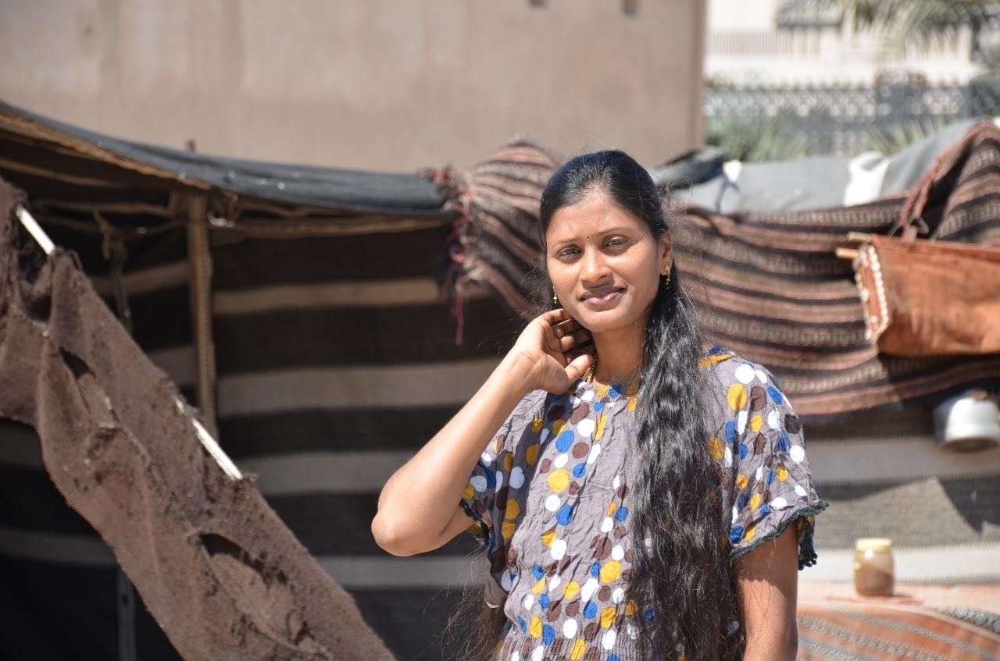

|  |
Dasari shirisha+91-7981270454sirisha.dasari269@gmail.com |
To work in pragmatic way in an organization where I can show my talent and enhance my skills to meet company’s goals and objectives.
| COURSE | INSTITUTION | BOARD/UNIVERSITY | YEAR OF COMPLETION | PERCENTAGE |
|---|---|---|---|---|
| MBA (Finance) | SREE CHAITHANYA PG COLLEGE | JNTUH | 2015 | 72% |
| Degree(BA) | SDLCE | KAKATIYA UNIVERCIT | 2009 | 65% |
| SSC | ZPP HIGH SCHOOL(GIRLS) | BOARD OF SECONDARY EDUCATION | 2009 | 65% |
I set high goals and work hard to achieve it. I strongly believe in hard work, smart work and teamwork. I have a good helping tendency.
I, shirisha do here by conform that the information given above is true to the best of my knowledge.